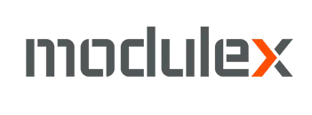
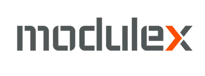

Kender I det?
Manuelle processer. Dobbeltindtastning. Systemer der ikke taler sammen.
Filer fejler i preflight — og ingen opdager det, før det er for sent.
Metadata tastes ind flere gange — i ordresystem, prepress og ERP.
Kvalitetskontrol afhænger af personer — ikke af processer.
Systemer lever i siloer — ordreindtag, produktion og fakturering hænger ikke sammen.
inProduction
skaber sammenhæng
Metadata flyder. Kvalitet kontrolleres. Systemer taler sammen.
Vi bygger workflows der forbinder ordreindtag, prepress, produktion og ERP. Kvalitetskontrol kører automatisk. Et konkret problem — resten vokser derfra.
En del af den grafiske branche siden 2007


 
